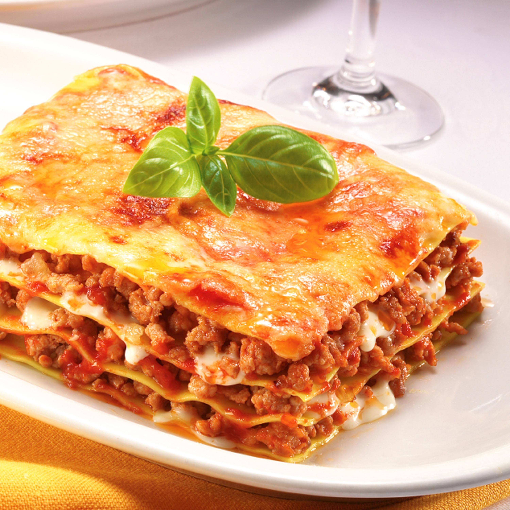

Lasagna

Description
This is a piece of delicious lasagna. You can make this with the ingredients and steps listed below.
Ingredients
Sweet Italian Sausage
Lean Ground Beef
Onion-One
Garlic-Two Cloves
Crushed Tomatoes-One Can
Tomato Sauce-Two Cans
Tomato Paste-Two Cans
White Sugar-Two Tablespoons
Fresh Parsley
Dried Basil
Salt
Italian Seasoning
Fennel Seeds
Black Pepper
Parmesan Cheese
Mozzarella Cheese
Ricotta Cheese
Egg-One
Steps
- Make the meat sauce
- Cook the noodles
- Make the ricotta mixture
- Layer the lasagna
- Cover with foil and bake
- Let the lasagna rest before serving